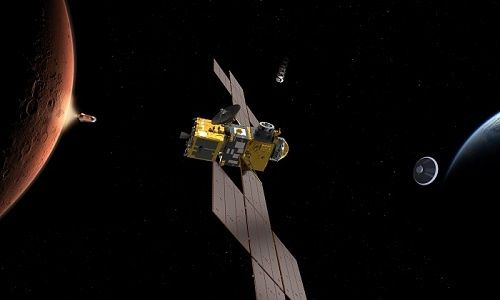

Entonces ¿por qué Marte es rojo?

Aunque el cuarto planeta del sistema solar tenga atardeceres y dunas azules, desde Tierra lo observamos rojo debido a las altas concentraciones de óxido de hierro en su superficie.
De modo que, cada vez que tengamos la posibilidad de ver desde nuestras casas al cuarto planeta del sistema solar, lo seguiremos viendo rojo, y no podremos disfrutar nunca de los atardeceres y las dunas azules. Salvo que alguna vez podamos visitar Marte.